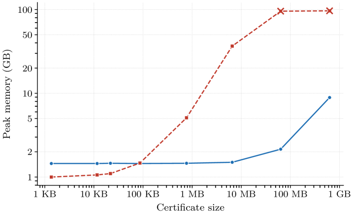

LRAT-Catcher imports DIMACS formulas and LRAT SAT certificates into Lean 4 as theorems via native reflection using Lean core's verified checker.
Abstract
SAT solvers settle combinatorial problems beyond the reach of interactive theorem provers and produce LRAT certificates for independent verification. We present LRAT-Catcher, a standalone, general-purpose tool that imports a DIMACS formula together with an LRAT certificate into Lean 4 as a theorem. LRAT-Catcher runs the formally verified LRAT checker from Lean core as compiled native code via reflection. This scales to instances where Mathlib's explicit proof-term import exhausts memory. LRAT-Catcher also composes cube-and-conquer solving runs entirely inside Lean. Per-cube refutations are combined with a cover-completeness certificate, itself an LRAT proof, into a single unsatisfiability theorem. Verified encodings connect CNF-level results to the original combinatorial problems. We evaluate the tool against Mathlib's proof-term import and the external checker cake_lpr on establishing the Schur number S(4) = 44 and the Ramsey number R(4,4) = 18 as Lean theorems.
Problem
SAT solvers settle combinatorial problems beyond interactive theorem provers and emit LRAT certificates, but a solver verdict is not a reusable theorem inside a proof assistant. Existing Lean tools like Mathlib's lrat_proof lack full RAT support and exhaust memory because proof terms embed the whole formula.
Approach
LRAT-Catcher is a standalone tool that imports a DIMACS formula and an LRAT certificate into Lean 4 as a theorem, running the formally verified LRAT checker from Lean core as compiled native code via reflection (with an optional kernel-only mode). It composes cube-and-conquer solving runs entirely inside Lean, combining per-cube refutations with a cover-completeness LRAT certificate via a single reusable composition theorem. Verified encodings and soundness lemmas lift CNF unsatisfiability back to statements about the original combinatorial problems.
Results
The tool establishes Schur number S(4)=44 and Ramsey number R(4,4)=18 as Lean theorems. Native reflection stays within ordinary memory bounds and scales to certificates where Mathlib's proof-term import exhausts memory, e.g. handling the 628 MB Schur S(4) certificate in 77s versus lrat_proof's 7944s.

Figure 1: Peak memory against certificate size, across the pigeonhole and Schur benchmark instances of Table 1 , for the two in-Lean import paths: \blacksquare native reflection and \blacksquare Mathlib ’s lrat_proof . Native reflection stays within an ordinary Lean process, whereas the explicit-proof-term import of lrat_proof grows with the embedded formula; a cross ( \times ) marks a run that th
Instance
Certificate
Native
cake_lpr
lrat_proof
Schur S(3)
22 KB
13.8
0.3
9.6
PHP(10,9)
63 MB
13.2
3.1
1212
Schur S(4) mono.
628 MB
77
27.4
7944
Import time (s) by workflow across benchmark instances